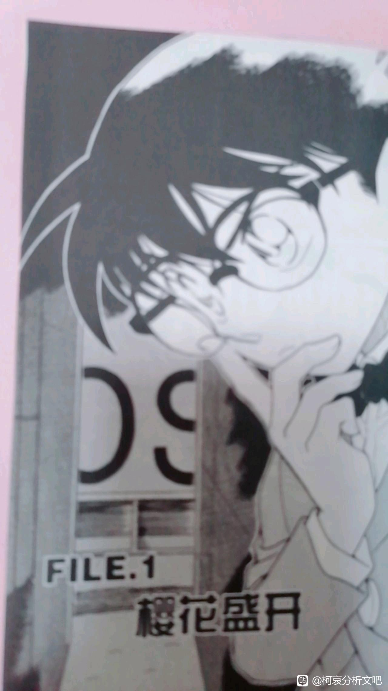
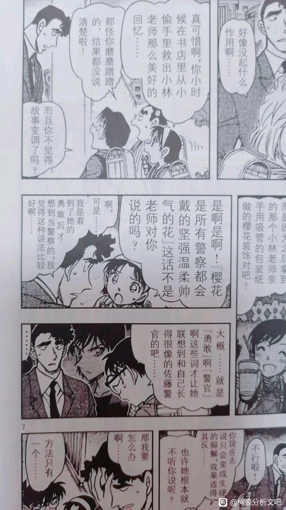
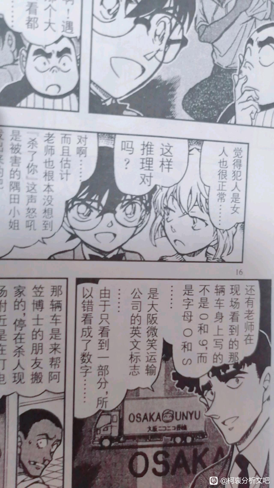
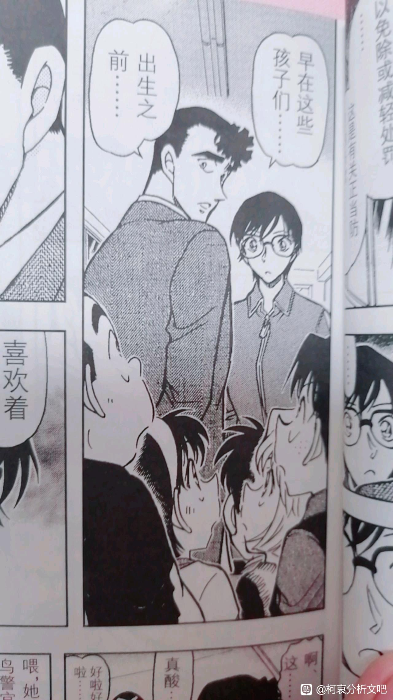
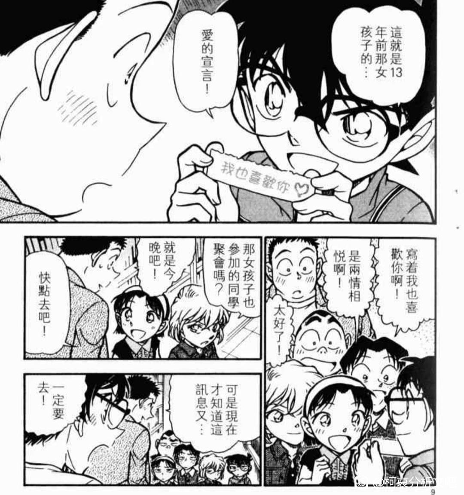
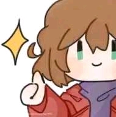

处处暗示柯哀。
小林老师把封面的这个角度的画面自然而然的看成了09这两个数字。
后面被柯南解释了，因为被遮住了，实际上是os。
然后就是封面的樱花盛开和这个让人想当然以为是09的字符。
为什么小林老师会出错，因为她太想当然了，看到这个画面，自然而然的脑补出来了09，结果错了。
所以樱花盛开是被迷惑的真相。
封面还是柯南，而不是白鸟和小林，柯南是不是在樱花班的时候在樱花盛开的前提下，自然而然的把毛利兰的笑容当成了自己心动的笑容。就像小林老师看错了一样，柯南也看错了。
小林老师把封面的这个角度的画面自然而然的看成了09这两个数字。
后面被柯南解释了，因为被遮住了，实际上是os。
然后就是封面的樱花盛开和这个让人想当然以为是09的字符。
为什么小林老师会出错，因为她太想当然了，看到这个画面，自然而然的脑补出来了09，结果错了。
所以樱花盛开是被迷惑的真相。
封面还是柯南，而不是白鸟和小林，柯南是不是在樱花班的时候在樱花盛开的前提下，自然而然的把毛利兰的笑容当成了自己心动的笑容。就像小林老师看错了一样，柯南也看错了。

步美这段话虽然非常在理，但是太像小兰说出那一句“勇气不是杀人的借口……”什么的。
这里其实非常的生硬，但是带入柯哀兰就不难理解了。
这里是依照柯南的推理来说，小林认为既不是白鸟的命定之人是因为，由她曾经亲口说出的话，却觉得勇敢和警察这两个词应该跟佐藤绑定在一起。
这让我想起，哀主动向毛利兰示好，就是因为毛利兰说出了关于勇气和正义的那一句句子。
也有吧友分析了，之所以要毛利兰说出口，就是因为那种简单粗暴，黑白分明的句子，只能有毛利兰这个比较假大空的人说出来才比较合适。
就像小林觉得勇敢这种字眼应该跟佐藤这样的警察来绑定一样。
哀自己觉得勇气这种字也应该有毛利兰这种待在正义的侦探身边的空手道少女来绑定一起。
但事实证明，两个人都错了。
（而且可能小兰那句青山非常喜欢的勇气句子。可能曾经的哀才是说出来的那个人，只是哀没有在阳光的环境下长大，和小林一样没有成为警察，所以下意识觉得这种句子自己没有说过。）
这里其实非常的生硬，但是带入柯哀兰就不难理解了。
这里是依照柯南的推理来说，小林认为既不是白鸟的命定之人是因为，由她曾经亲口说出的话，却觉得勇敢和警察这两个词应该跟佐藤绑定在一起。
这让我想起，哀主动向毛利兰示好，就是因为毛利兰说出了关于勇气和正义的那一句句子。
也有吧友分析了，之所以要毛利兰说出口，就是因为那种简单粗暴，黑白分明的句子，只能有毛利兰这个比较假大空的人说出来才比较合适。
就像小林觉得勇敢这种字眼应该跟佐藤这样的警察来绑定一样。
哀自己觉得勇气这种字也应该有毛利兰这种待在正义的侦探身边的空手道少女来绑定一起。
但事实证明，两个人都错了。
（而且可能小兰那句青山非常喜欢的勇气句子。可能曾经的哀才是说出来的那个人，只是哀没有在阳光的环境下长大，和小林一样没有成为警察，所以下意识觉得这种句子自己没有说过。）

还有小林搞错的那一个线索，真正的线索指向OS，是微笑公司的标识。
重点哈，微笑。
有没有想到让工藤新一心动的那个笑容。
而且青山刚昌还特意在那个标识的中间加了一个戴帽子的小笑脸。
错位论很有可能是：哀戴帽子对新微微一笑。（反正帽子一直是哀的隐藏道具，和眼镜差不多。）
重点哈，微笑。
有没有想到让工藤新一心动的那个笑容。
而且青山刚昌还特意在那个标识的中间加了一个戴帽子的小笑脸。
错位论很有可能是：哀戴帽子对新微微一笑。（反正帽子一直是哀的隐藏道具，和眼镜差不多。）

2024-04-01 11:08 | Orange毛儿七:还有重点就是看错。封面柯子直接替代了小林的位置，他也看错了。
我当时看的时候就想吐槽一下。
你都认错人了，还说什么早在这些孩子们出生之前就一直喜欢着人家。
然后我突然脑壳一直一点光。
之前弹幕就在开玩笑，柯哀这两个孩子不太一定哦。
如果是这样说的话，万一青山就这个意思呢。
柯哀不是小孩子呀。不过少年侦探团这三个就像他们的孩子一样。
白鸟突然一副跟少年侦探团很熟的样子，不过他有些动作很像柯南，比如说惹老婆生气了，会迁怒给少年侦探团什么的。
所以我这里就开始代餐了。
如果说柯南也爱错人的话。
那柯南也可以符合这句情话。
“早在这些孩子出生以前，我就一直喜欢着你。”
你都认错人了，还说什么早在这些孩子们出生之前就一直喜欢着人家。
然后我突然脑壳一直一点光。
之前弹幕就在开玩笑，柯哀这两个孩子不太一定哦。
如果是这样说的话，万一青山就这个意思呢。
柯哀不是小孩子呀。不过少年侦探团这三个就像他们的孩子一样。
白鸟突然一副跟少年侦探团很熟的样子，不过他有些动作很像柯南，比如说惹老婆生气了，会迁怒给少年侦探团什么的。
所以我这里就开始代餐了。
如果说柯南也爱错人的话。
那柯南也可以符合这句情话。
“早在这些孩子出生以前，我就一直喜欢着你。”

少年侦探团就是为了柯哀塑造出来的。他们也为白鸟和小林助攻做了巨大贡献。
但是没有少年侦探团不代表这两对没有缘分了。
毕竟早在少年侦探团出现以前。
他们就相遇了。男方还一见钟情了。
但是没有少年侦探团不代表这两对没有缘分了。
毕竟早在少年侦探团出现以前。
他们就相遇了。男方还一见钟情了。
73小动作挺多的，伦敦篇告白之前也搞了个柯南对灰原举告白词的动作，还和笑脸的动作一样

2024-04-02 01:38 | 贴吧用户_JQ66C9C:13年前，真巧啊732024-04-03 08:46 | 贴吧用户_GtXCJD9:而且这个右下的格子里只有哀是微微笑的！！

这个前几天看动画说到09是日语微笑里的OS时我就想起樱花篇那里的微笑，而且小林的“想当然”以及小林和百鸟两人对对方记忆的偏差真的是让人细思极恐。
2024-04-01 12:04 | 平者深黑:具体说下？怎么和日语微笑扯上关系的我没看出来2024-04-01 12:08 | 霸气而低调:回复 平者深黑 :是我理解错了，动画里是大阪不是微笑2024-04-01 12:13 | 霸气而低调:回复 霸气而低调 :动画里面说那个是货车上印着“OSAKA UNYU”，是大阪微笑运输公司的车子，然后小林把OS当成是09（其他被遮挡住了）。而本人不懂日语以为OSAKA是微笑的意思，其实是大阪的意思，不过仍然不影响我当时的想法（第一条评论）2024-04-01 13:49 | 平者深黑:Osaka是大阪，ニコニコ是微笑，unyu是運輸


好像看过这个分析的，不过到一半就断了

白林真还算是有铺垫的了，但拉出来画的时候总是跟柯哀有关，这确实是耐人寻味的点。
如果这个伏笔回收，那我愿称你为新一代显微镜之神，称刚子为刚圣！！！
很棒的分析。留印
分析的不错 插眼
插眼
插眼插眼
插眼
还有一些惊人的。小林以为自己是佐藤的替身。事实上，佐藤才是自己的替身。而且在这一话中，为了完成案子，佐藤开始扮演小林，并戴上了眼镜。
首先先来看看两个人。
小林有眼镜，没有战斗力，是男方初恋。
佐藤没眼镜，有战斗力，是初恋替身。
佐藤救了小林（说实话有点像满月篇，因为我到现在都不明白，佐藤怎么在杀人犯的眼皮子底下扮演小林的。）
然后小哀有眼镜，没有战斗力。小兰没眼镜，但是有战斗力。
小兰救过小哀（我现在也不明白她是怎么从车厢里钻出来的，和佐藤怎么做到迅速扮演了小林的？我都到现在都没写。）
首先先来看看两个人。
小林有眼镜，没有战斗力，是男方初恋。
佐藤没眼镜，有战斗力，是初恋替身。
佐藤救了小林（说实话有点像满月篇，因为我到现在都不明白，佐藤怎么在杀人犯的眼皮子底下扮演小林的。）
然后小哀有眼镜，没有战斗力。小兰没眼镜，但是有战斗力。
小兰救过小哀（我现在也不明白她是怎么从车厢里钻出来的，和佐藤怎么做到迅速扮演了小林的？我都到现在都没写。）
2024-05-05 01:46 | 林夕劫掠队长💕:到这层楼蚌埠住啦
还有一点点幽默的是，佐藤有一个很可爱的行为，到最后也不知道自己曾经当过小林的替身，疑惑这个女孩自己好像见过，柯南吐槽明明是因为跟你长得像。
如果替换到小兰身上就有点小丑，很可能小兰到最后都不会知道自己是替身。就像樱花班一样，被隐瞒真相，不知道自己被自己喜欢的老师当做自己女儿的替身。
如果替换到小兰身上就有点小丑，很可能小兰到最后都不会知道自己是替身。就像樱花班一样，被隐瞒真相，不知道自己被自己喜欢的老师当做自己女儿的替身。
2024-05-05 02:12 | QuantumEntangl:最喜欢看对照系了
还真是有对照在，有点东西
这也太厉害了
太牛了。。
哇，插眼了